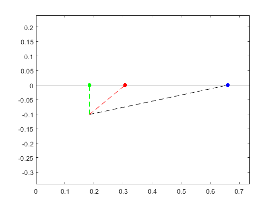
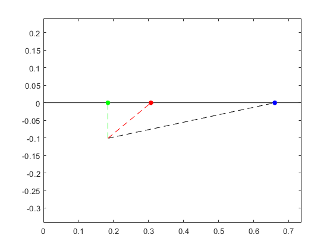

Kite Project
Thermal Fluid Systems FA23
By Joe Leedy
Contents
close all clear all clc
Kite Shape Parameters
Kite is a simple diamond design with a cross beam at the COP (1/4 the total length). This allows for more simplified complications. The following section defines the length, width, and frontal area of my kite.
W = 29; %length of beam (in) L = 29; W = W * 0.0254; %convert to meters L = L * 0.0254; A = (W*L)/2; % m^2 (surface area)
Air Properties
t_air = ((40-32)/1.8); % c hum_air = 40; % relative humidity % [rho_air,mu_air] = AirProperties(t_air,[],hum_air); %credit to @sjfitz on github for this funciton mu_air = mu_air * 0.1019; %conversion factor to kg/m-s t_air = t_air + 273; %convert to K
Solving for Center of Pressure and Center of Gravity
kiteshape = [0 W/2 0;0 L/4 L]; %points to plot the kite shape cline = [0 0;0 L]; %plot the kite and a dashed centerline plot(kiteshape(2,:),kiteshape(1,:),'Color','blue'); axis equal hold on; plot(cline(2,:),cline(1,:), '--', 'Color','black'); % code for generating a peicewise function of the kite m1 = (W/2)/(kiteshape(2,2)-kiteshape(2,1)); %eq. 1 b1 = 0; m2 = -(W/2)/(kiteshape(2,3)-kiteshape(2,2)); %eq. 2 b2 = -m2*L; %code for calculating center of gravity Ad = @(x) x.*m1 + b1; %functions for denominator of CoG formula Bd = @(x) x.*m2 + b2; An = @(x) x.*(x.*m1 + b1); %functions for numerator Bn = @(x) x.*(x.*m2 + b2); CoG = (integral(An, kiteshape(2,1),kiteshape(2,2))+ ... integral(Bn,kiteshape(2,2),kiteshape(2,3)))/ ... (integral(Ad, kiteshape(2,1),kiteshape(2,2))+ ... integral(Bd,kiteshape(2,2),kiteshape(2,3))); CoP = L/4; %CoP is one fourth the relevant chord length %plot the CoP and CoG plot(CoP,0, '.',"Color",'red','MarkerSize',20) plot(CoG,0,'.','Color','green','MarkerSize',20) legend('','', 'Center of Pressure','Center of Gravity') hold off

Solving for Moments: Bridal Point Calculation
x = 3 * 0.0254; %offset of bridal points from the ends of the kite a = ((3*L)/4) - x; %length from bridal point to CoP alpha = deg2rad(12); %setting flying angle r1 = a * tan(alpha); %magnitude of r1 d = CoG - CoP; %distance between r1 and r2; theta = atan(d/r1); r2 = d/(sin(theta)); %magnitude of r2; c = r1/(sin(alpha)); %length of bridle string from long end to CoP % plot bridal point, r1, r2 to check figure() plot([0,L],[0,0],"Color","Black"); axis equal; hold on plot((L-x),0,'.','MarkerSize',20,'Color','Blue') plot([CoP,L-x],[-r1,0],'--','Color','Black') plot(CoG,0,'.','MarkerSize',20,'Color','Red') plot(CoP,0,'.','MarkerSize',20,'Color','Green') plot([CoP,CoP],[-r1,0],'--','Color','Green') plot([CoP,CoG],[-r1,0],'--','color','Red') hold off
 
 Solving for Moments: The Moments
```code block```